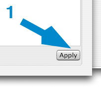

Applying changes to your songs
This will show you how to apply changes to your songs. Please be sure that you have only the songs that you want in your panel before you apply changes - Findem will do exactly what it is told!
To apply changes to your songs
- Click on Apply; all songs in your panel will be updated
